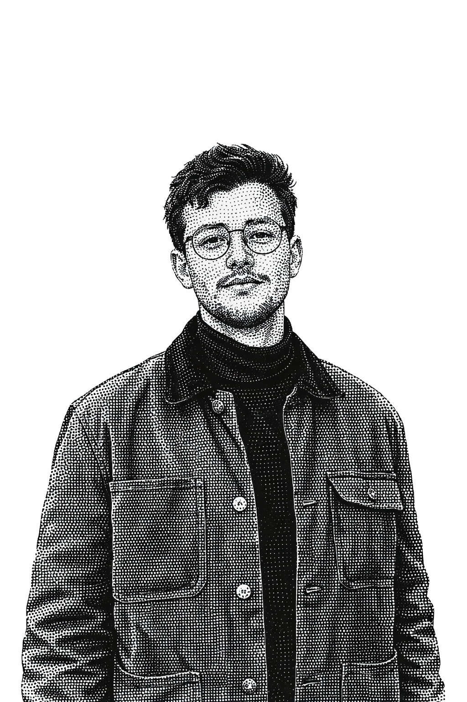
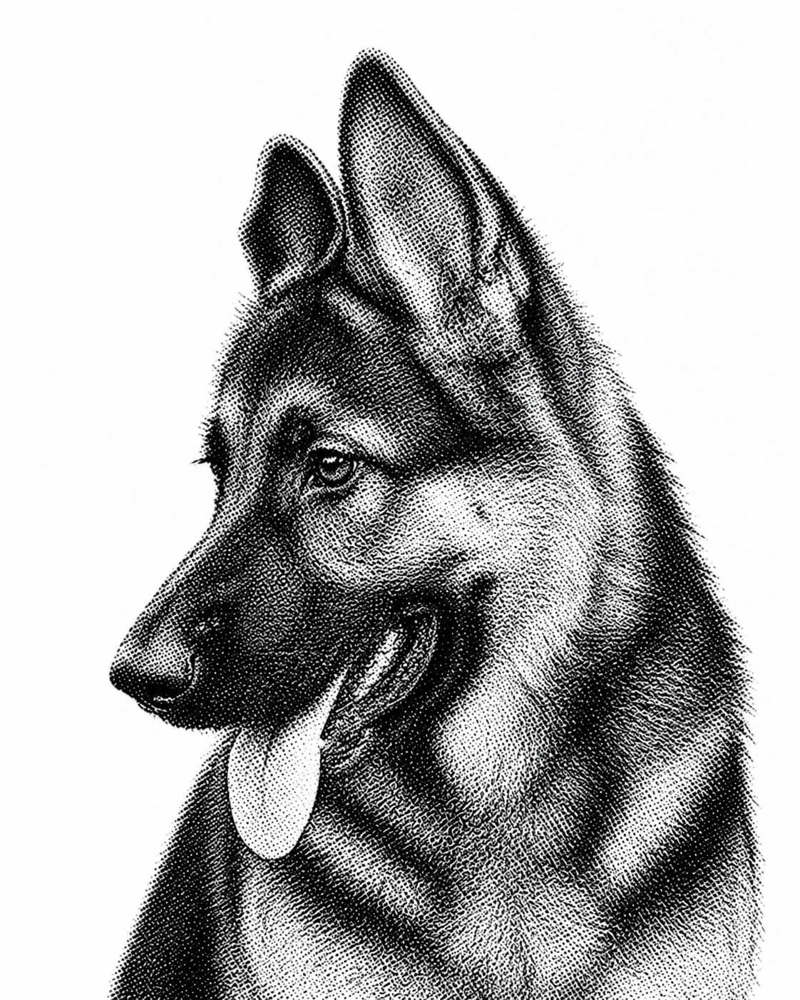

Security researcher focused on vulnerability research, exploit development and offensive tooling. Previously led offensive security engagements across Latin America and Europe, working on architecture review, reverse engineering and custom fuzzing solutions for critical systems.
Studied software engineering at 42 Rio de Janeiro. Contributes to the development and maintenance of engineering solutions that deliver value to our end clients — tools and systems designed to identify vulnerabilities and reduce risk.
Undergraduate student in Business Administration at the Federal University of Viçosa (UFV), contributing to LESIS through analytical research on industry dynamics, market structures, and data-driven insights. His work supports the organization's research efforts by strengthening strategic understanding of the information security landscape and its economic and organizational dimensions.

German Shepherd responsible for advanced threat detection, snack auditing, and maintaining team morale at all-time highs. Specializes in tail-based alert systems and rapid-response barking protocols. Brings strong expertise in perimeter monitoring, suspicious noise investigation, and emotional support during critical deployments. Known for unwavering loyalty, excellent uptime, and occasional zoomies under high-load conditions.